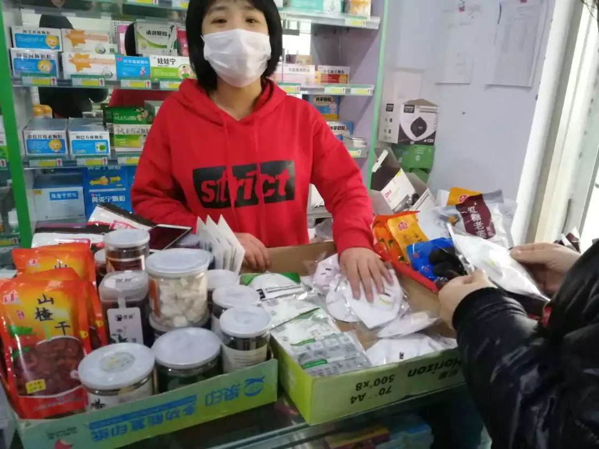

口罩告急！武汉医生每日发愁防护物资短缺
原文链接 备份链接 其他科室要尽量把医用口罩和防护服留给隔离病房的医护人员使用 2020年1月22日，在湖北省政府首场新型冠状病毒感染肺炎疫情防控工作新闻发布会上公布，新型冠状病毒感染的肺炎已致湖北17人死亡。图/新华 文 |《财经》 …
23.01.2020

本文字数：1298，阅读时长大约2分钟
导读：比春运期间高铁票更难买的东西，是新型冠状病毒蔓延时期的口罩。
作者 | 第一财经 段倩倩
比春运期间高铁票更难买的东西，是新型冠状病毒蔓延时期的口罩。
柳依依对此深有体会。她休了年假，1月16日就从平时工作的深圳回了河北老家。春运期间的高铁票难抢，可她还是回到了家。在柳依依看来，高铁票不过如此，口罩比高铁票更难买，尤其是N95口罩。
N95口罩指通过美国NIOSH认证，非油性颗粒物过滤效率大于或等于95%的口罩。KN95口罩指符合中国GB 2626强制性标准的口罩，防护效果等同于N95。除了工业口罩，医用防护口罩、医用外科口罩也有同等防护效果。
值得注意的是，普通医用护理口罩、棉布口罩等对病毒防护效果极为有限，而电商平台上有防护效果的口罩被抢购一空。京东提供的数据显示，1月19日至22日期间，京东平台口罩累计售出超过1.26亿只、消毒液累计销售31万瓶，洗手液累计销售100万瓶。仅1月22日一天，口罩的销量环比上月日均增幅高达48倍。平台偶尔放货消费者要拼手速。

正值春节假期，第三方商家多数只接单不发货，对于1月22日之后的订单，商家承诺的发货日期为2月1日。寥寥数家春节发货的第三方商家，把口罩价格定得奇高无比。霍尼韦尔、3M等知名厂商的N95口罩产品，曾被商家炒到50元/只，正常水平下N95口罩售价约10元一只。
包括淘宝、京东、饿了么、苏宁易购等在内的多家电商平台先后发布声明，称不允许平台上口罩等健康用品涨价。第一财经查询电商网站后发现，春节发货的N95口罩均价在30元一只。
对医用耗材需求最大的城市是武汉，武汉也向社会呼吁请求支援医用耗材。1月22日晚间，阿里巴巴称已协调到国内92家口罩厂商，可统计的口罩现货库存共计4612.2万只，这些厂商预计节前可继续生产157万只口罩；节后全面恢复生产后，预计日产能1628.9万只。
1月23日，网易严选表示通过紧急协调产能，追加了一批新口罩，其中3万片3D防护口罩专供湖北，优先免费提供给湖北用户，付邮即可领取；另有15万片独立包装一次性口罩供全国用户购买。
不仅是线上，线下药店口罩同样难买。22日下午，第一财经走访河北邯郸市部分药房，N95口罩普遍断货，有药店表示N95接受预定，晚上能到货，售价为25元一只。被问及口罩品牌时，该药店店员表示，N95现在要靠抢，药店不知道到货口罩的品牌，也不清楚能到多少货，具体情况要等口罩到货后再看。
23日上午，这家药店将KN95口罩放在了收银台位置，店员称口罩价格是30元一只，“口罩现在是一天一个价。”第一财经走访该城市其它药房发现，N90（非油性颗粒物过滤效率大于或等于90%的口罩）口罩也卖到了30元一只。

对于哄台物价行为，广东省、江西省、和北京市等多地市场监督管理局曾表示，要求零售药店明码标价，不跟风涨价。
柳依依对第一财经表示，如果没有休年假，自己就不会回家了——正常情况下她1月22日才能回家，在病毒传播的压力下，那些没有休年假的同事，很多退掉了返家的车票或机票。22日晚间，柳依依所在城市的多家药房口罩被抢空，她知道自己晚了一步。当天晚上，柳依依在电商平台疯狂扫货，光是买口罩就花了超过1500元，涉及到淘宝、拼多多、京东、苏宁易购等平台。“有的商家虽然没提价，但是春节后才会发货，照年前这个状况，年后不一定有货，多买一点，以防有的商店不发货。”
柳依依对买不到口罩的恐惧超过了买不到高铁票。和每一个人一样，她期待不戴口罩就能出门的日子。
【推荐阅读】
新病毒传播渠道都没搞清，慎言“可防可控”


原文链接 备份链接 其他科室要尽量把医用口罩和防护服留给隔离病房的医护人员使用 2020年1月22日，在湖北省政府首场新型冠状病毒感染肺炎疫情防控工作新闻发布会上公布，新型冠状病毒感染的肺炎已致湖北17人死亡。图/新华 文 |《财经》 …
原文链接 备份链接 历史上，很多置人于死地的病毒并不是被人类消灭了，而是人类和它们分开居住了。 记者 | 吴洋洋 许冰清 刘娉婷 郑晶敏 郭苏妍 邓舒夏 数据资料整理 | 王一越 图表制作 | 程 星 确诊人数出现激增72小时之后，武汉 …
原文链接 备份链接 1月21日，湖北武汉站出站口，大部分乘客戴上了口罩。中青报·中青网记者 李峥苨/摄 据卫健委卫生应急办公室最新消息，截至1月22日24时，国内25个省（区、市）累计报告新型冠状病毒感染的肺炎确诊病例571例，13个 …
原文链接 备份链接 22.01.2020本文字数：1913，阅读时长大约3.5分钟 导读：第一财经记者在武汉、广州、上海等地进行了多方实地采访后了解到，不少地区的药房、便利店内的口罩在这几天已经脱销，即便有所补货也会被一抢而空。 …
原文链接 备份链接 3月6日。 今天阴天。阴沉沉的，心情随之而阴。空气中充斥着沉闷，无处不伤感。疫情与昨天比，没有明显变化，新增确诊人数依然上百，呈僵持局面。这种僵持还有多久，下周能结束吗？ 这几天，我也像很多武汉人一样，压抑，郁闷，加上 …